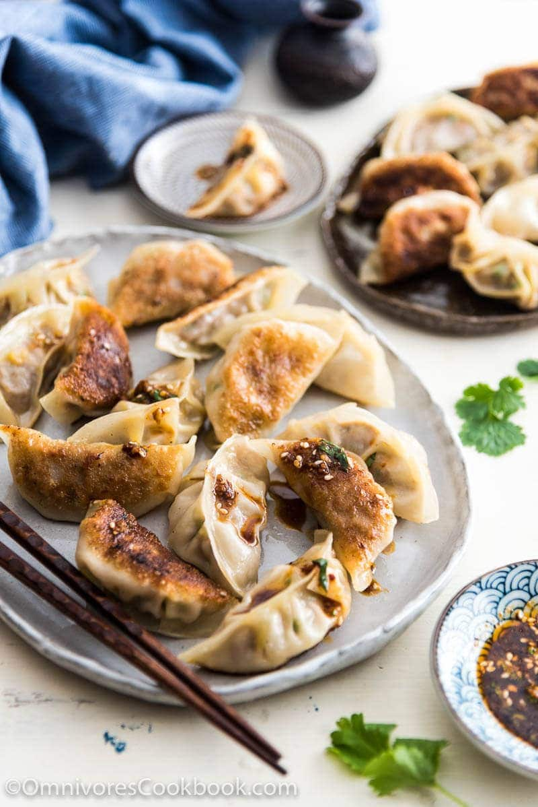

Dumplings

One of the perks of living in Beijing was having the various
options of delicious frozen dumplings from grocery stores.
Dumplings were a must-have in my fridge when I was living there.
Whenever I felt too lazy to cook, I simply boiled a dozen dumplings and
then had dinner ready in 10 minutes. Unlike the frozen dumplings (or potstickers)
you can find in the US, Chinese frozen dumplings use a nicer dough that
resembles homemade dumplings with a juicy filling. The filling is usually
quite large, almost like a small meatball.
One of my favorite frozen dumpling brands is Wanchai Ferry (湾仔码头),
a local brand owned by General Mills that sells dozens of flavors
that are only available in China. Those frozen dumplings were so good that
sometimes I needed to suppress the urge of writing to General Mill and
demanding them to sell this line of product in the US!
Ingredients
- 1/2 pound (230 grams) ground beef (at least 20% fat)
- 1/4 cup chicken stock (or beef stock, or water)
- 1 tablespoon light soy sauce (or soy sauce)
- 1 tablespoon Shaoxing wine (or dry sherry)
- 2 teaspoons ginger , grated
- 1 teaspoon salt
- 1/4 teaspoon ground toasted Sichuan peppercorn (or black pepper)
- 4 green onions , coarsely chopped
- 1 large carrot , coarsely chopped
- 1/2 cup frozen corn , thawed
- 1/2 cup frozen green peas , thawed
- 1 tablespoon sesame oil
- 20 homemade dumpling wrappers (or packaged dumpling wrappers)
- 1 to 2 tablespoons vegetable oil
Steps
- To make the dumpling filling, add ground beef into a big bowl.
Add chicken stock, light soy sauce, Shaoxing wine, ginger, salt,
and toasted Sichuan peppercorns. Mix by using a pair of chopsticks
until the liquid is fully absorbed. Cover with plastic wrap, and
let marinate in the fridge while you prepare other ingredients.
- (Optional) You can start making dumpling dough now if you’re planning
to use homemade dumpling wrappers.
- Add carrot into the food processor. Mix until finely chopped. Add
green onions. Mix until the onions are finely cut. Transfer to a bowl.
- When you’re ready to make the dumplings, add minced green onion,
carrot, corn, green peas and sesame oil into the ground beef
mixture. Stir to mix well.
- Scoop about 1 to 1.5 tablespoons dumpling filling and place it in
the center of the wrapper. Hold the dumpling with one hand and
start sealing the edges with the other hand. After folding, press
the edges again to seal well. You can use any way to fold the
dumplings as long as you’re comfortable with it.
- Now you can freeze these dumplings if you don’t cook them immediately.
Place them onto a baking tray and seal with a plastic wrapper.
You can store the dumplings in the freezer for up to 1 month.
Once the dumplings are completely frozen, after about a day,
you can transport them to a gallon bag to save freezer space.
- Cook the dumplings in batches. Heat 1 tablespoon oil in a nonstick
skillet over medium heat until hot. Add dumplings. Cook until the
bottom side turns golden. Add 2 tablespoons water, and cover.
Cook until the other side also turns golden and the dumplings
are cooked through, 2 to 3 minutes.
- You can serve the dumplings immediately with dumpling dipping
sauce (the spicy dumpling sauce works extremely well with these
beef dumplings).